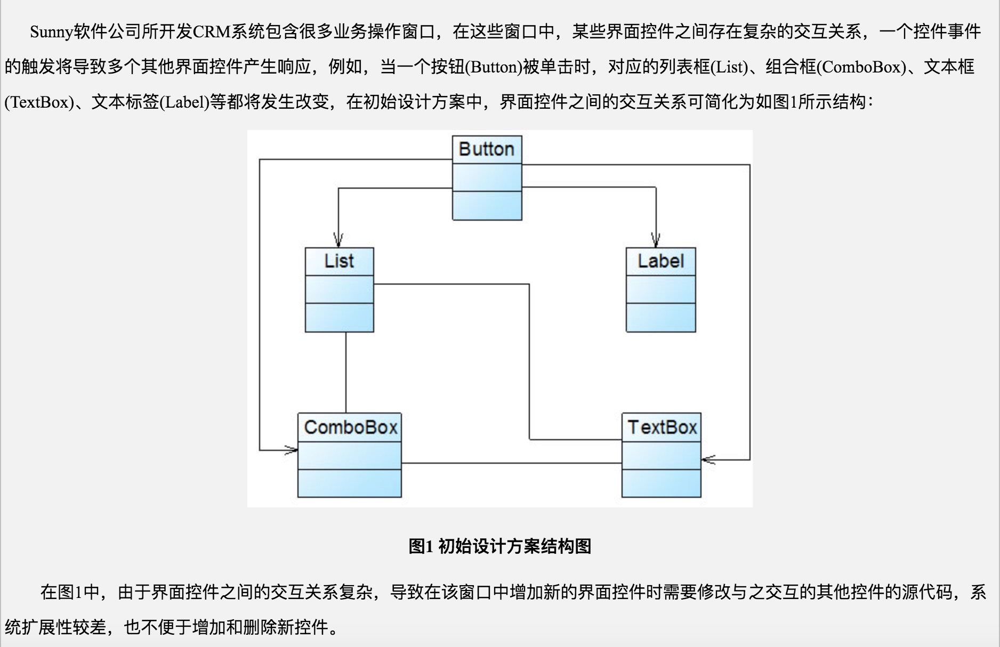
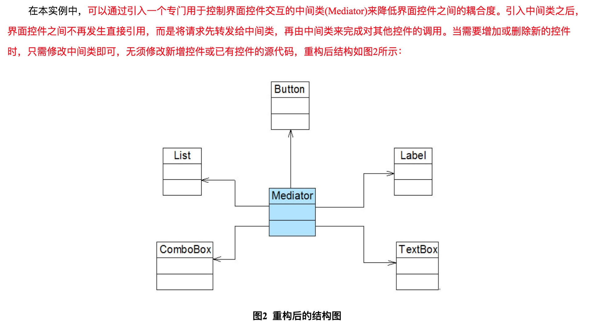

恒哥最近压力大得不亚于特朗普。刚刚在学习了设计模式中的六大原则，趁还没忘，赶紧做下笔记记下来。下面会以官方说法，通俗说法以及应该场景来说明下。
官方说法：一个类只负责一个功能领域中的相应职责，或者可以定义为：就一个类而言，应该只有一个引起它变化的原因。
通俗说法：一个类如果可以所承担的责任越大，它被复用的可能性就越小。并且当一个类的职责过多，它的耦合度就会上升，当其中一个职责变化时，可能会影响其它职责的运作。
应用场景：单一职责原则是高内聚低耦合的指导方针。在你的软件中发现一个类有两种职责时，那就问自己一个问题：可以将这个类分成两个类吗？如果真的有必要，那就分吧。千万不要让一个类干的事情太多！
官方说法：一个软件实体应当对扩展开放，对修改关闭。即软件实体应尽量在不修改原有代码的情况下进行扩展。
通俗说法：简言之，对扩展开放，对修改封闭。换句话说，可以去扩展类，但不要去修改类。
应用场景：为了满足开闭原则，需要对系统进行抽象化设计，抽象化是开闭原则的关键。当需求有改动，要修改代码了，此时您要做的是，尽量用继承或组合的方式来扩展类的功能，而不是直接修改类的代码。
官方说法：所有引用基类（父类）的地方必须能透明地使用其子类的对象。
通俗说法：在软件中将一个基类对象替换成它的子类对象，程序将不会产生任何错误和异常，反过来则不成立，如果一个软件实体使用的是一个子类对象的话，那么它不一定能够使用基类对象。例如：我喜欢动物，那我一定喜欢狗，因为狗是动物的子类；但是我喜欢狗，不能据此断定我喜欢动物，因为我并不喜欢老鼠，虽然它也是动物。
应用场景：在继承类时，务必重写（Override）父类中所有方法，尤其要注意父类中的protected方法（因为这些往往是要你重写的），子类尽量不要暴露自己的public方法供外界调用。
官方说法：抽象不应该依赖于细节，细节应当依赖于抽象。换言之，要针对接口编程，而不是针对实现编程。
通俗说法：应该面向接口编程，不应该面向实现类编程。面向实现类编程，相当于就是论事，那是正向依赖（正常人思维）；面向接口编程，相当于通过事物表象来看本质，那是反向依赖，即依赖倒置（程序员思维）。
应用场景：依赖倒转原则要求我们在程序代码中传递参数时或在关联关系中，尽量引用层次高的抽象层类，即使用接口和抽象类进行变量类型声明、参数类型声明、方法返回类型声明，以及数据类型的转换等，而不要用具体类来做这些事情。为了确保该原则的应用，一个具体类应当只实现接口或抽象类中声明过的方法，而不要给出多余的方法，否则将无法调用到在子类中增加的新方法。
官方说法：使用多个专门的接口，而不使用单一的总接口，即客户端不应该依赖那些它不需要的接口。
通俗说法：在设计接口时可以把接口组合化，例如需要设计一辆车时，不要设计成车的接口，可以分成轮胎接口，车门接口，天窗接口等的专门接口。
应用场景：在需要设计一辆suv时，可以加上门，轮胎，天窗；但是要你设计一辆敞蓬跑车时，天窗就不需要加上。
官方说法：一个软件实体应当尽可能少地与其他实体发生相互作用。
通俗说法：应该尽量减少对象之间的交互，如果两个对象之间不必彼此直接通信，那么这两个对象就不应当发生任何直接的相互作用，如果其中的一个对象需要调用另一个对象的某一个方法的话，可以通过第三者转发这个调用。简言之，就是通过引入一个合理的第三者来降低现有对象之间的耦合度。
应用场景：看图容易理解：


以上就是设计的六大原则
〔完〕
写留言
请留下您想说的：